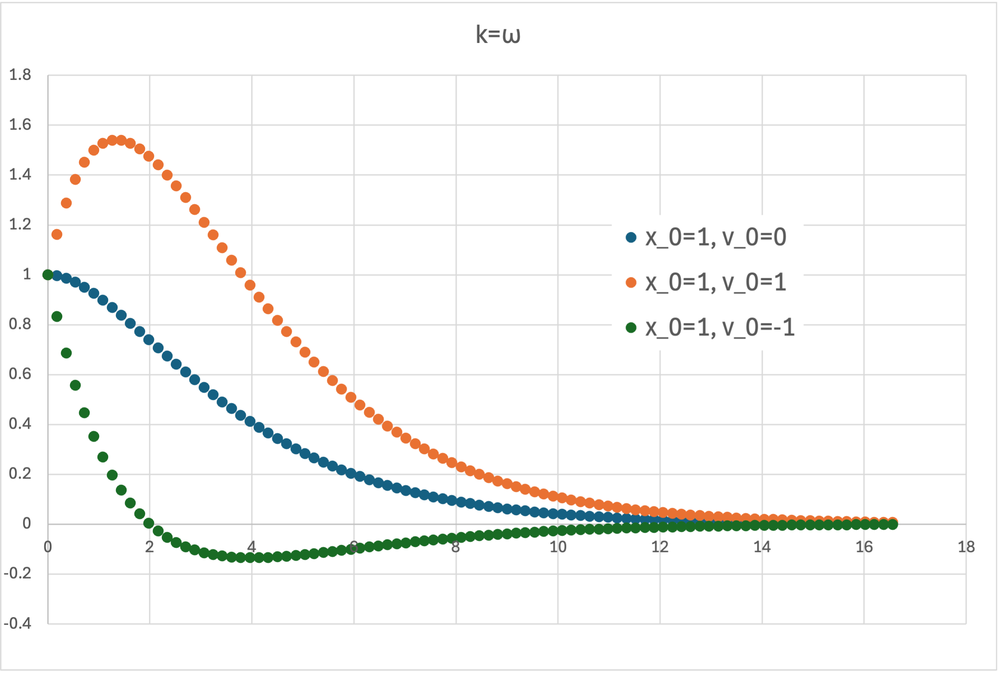

ラプラス変換_運動方程式 - k=ω
・ k = ω
\( \Large \displaystyle F(s) =\frac{ s \ f(0) + f'(0) + 2k \ f(0)}{s^2 + 2ks+ \omega^2 } \)
ですが，k=ω，の場合には，
\( \Large \displaystyle F(s) =\frac{ s \ f(0) + f'(0) + 2k \ f(0)}{(s+k)^2 } \)
となり，さらに，
\( \Large \displaystyle F(s) =\frac{ s \ f(0) + f'(0) + 2k \ f(0)}{(s+k)^2 }
=
\frac{ (s+k) \ f(0) + f'(0) + k \ f(0)}{(s+k)^2} \)
とすると，
\( \Large \displaystyle F(s) = \frac{ f(0) }{s+k} + \frac{ f'(0) + k \ f(0)}{(s+k)^2} \)
と分けることができます．
\( \Large \color{red}{\mathfrak{ L} \{ e^{-at} \} = \displaystyle \frac{1}{s+a}} \)
\( \Large \displaystyle \color{red}{\mathfrak{ L} \{ t \ e^{-at} \} = \frac{1}{(s+a)^2}} \)
を使って，
\( \Large \displaystyle x(t) =
f(0) \ e^{-k t}+ \{ f'(0) + k \ f(0) \} \ t \ e^{-kt}
=
\left[ f(0) + \{ f'(0) + k \ f(0) \} \ t \right] e^{-kt} \)
となります．図示すると，

のように，初期条件，特に初期速度によって振る舞いが変わりますが，振動せずにある一つのピークを持つ（場合のある）曲線となります．
これを，臨界減衰，と呼ぶようです．
次は， k<ω，の場合です．